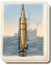

Basic Unit Statistics (can be modified by difficulty level, arts, skills, traits and retainers)
| Recruitment Cost | 1440 | |
| Upkeep Cost | 180 | |
| Marines | 10 | 8% |
| Seamen | 5 | 2% |
| Gunners | 6 | 3% |
| Accuracy | 5 | 7% |
| Reloading Skill | 5 | 12% |
| Hull Strength | 250 | 2% |
| Morale | 12 | 24% |
Strengths & Weaknesses
- Excellent at supporting bigger ships
- Equipped with torpedo tubes
- Fast, good manoeuvring
- Very strong against slow ships
- Good morale
- Small crew
- Weak against artillery
Abilities
- Fast Reload - This increases the reload skill of a ship's crew for a short period of time.
- Overheat Engine - This increases a ship's speed for a short period of time.
Requires
- Buildings:

- Arts: 
Description
A small, fast-moving vessel armed with deadly torpedoes.
This ship is similar to many others of its class with one important difference: it is equipped with torpedo launching tubes. This deadly new technology means that self-propelled torpedoes can be fired from this ship, causing devastating damage to enemy vessels. The ship still retains its speed and manoeuvrability and, as such, is able to attack larger, slower ships and then beat a speedy retreat. However, should it come under fire it will take heavy damage. The first self-propelled torpedo was designed by the English engineer Robert Whitehead; torpedoes had originally been explosives on the end of spars, sticking out from a vessel. He worked at Fiume in Austria, and it was here that he met fellow engineer Giovanni Luppis. Luppis had been working on plans for a self-propelled torpedo and approached Whitehead to help him finalise the designs. After a few initial tests Whitehead abandoned Luppis' plans for a shore launch control system and started working on a new system that could launch torpedoes from ships. He presented his design, the "Minenschiff", to the Austrian Imperial Naval commission in 1866. The Austrian government chose to invest in Whitehead's invention, and he started the first torpedo factory in Fiume. It was only a matter of time before other nations heard about this amazing new technology, and in 1871 the British Admiralty paid Whitehead £15,000 for his designs.